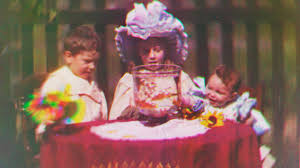

History of Movies
Movies began in the late 1800s with silent black-and-white films. The very first black and white film was called the "Roundhay Garden Scene" which was a 2.11 second short silent film shot on October 14th in 1888. It was made by the French inventor, Louis Le Prince in Leeds from England.
Although Le Prince was the first to create film he disappeared before he could display his work, leaving Thomas Edision to be known as the father of motion pitcure and the creator of the kinetograph.

All films in the late 1880's and early 1890's were under a minute, without sound and mostly consisted of a single shot on a steady camera. The short films went from a simple novelty to an entertainment industry in it's first decade. With the invention of film editing, camera movements and other techniques throughout the years it changed the way we shot film and created certain narratives.
In 1902 natural colored film emerged. Some of the first works being invented by Edward Raymond Turner. Before this, films were not naturally colored but hand-painted, tinted, stenciled or chemically treated (starting in 1895).

October 6th, 1927 is when talkies or movies with sound officially began. The very first film to have sound was "The Jazz Singer". Although it was part talkie with limited dialogue it helped spring the industry into a new wave of sound film which became the standard in the early 1930's, ending the silent era. These talkies first relied on Vitaphone sound-on-disc systems to capture sound, it was hard to maintain and often had films with many stills due to the massive amount of wires and bulky equipment used to make them. Soon after, films would switch to sound-on-film for better synchronization which allowed for more talkies with wider range of character movement.

In the 1950s is when TV, home video (1980's) and the internet (1990) influenced the consumption of films. With the varity of ways to make and publicize your own films, home videos and video art became more popular. Over time, sound, color, and digital effects transformed cinema into what we know and watch today.

Interactive Timeline
Click a year to learn more!